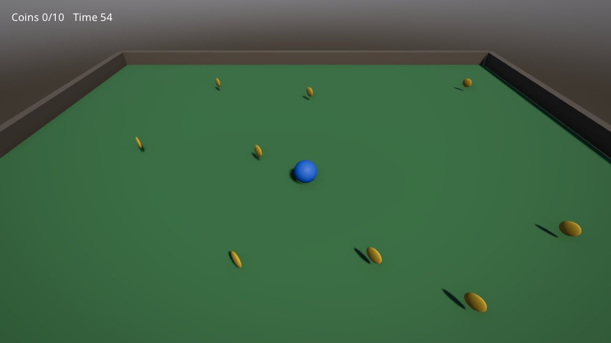

Coin Grab: a game in code only
Roll a ball around a walled field and pick up every coin before time runs out. The whole game is one C# file of about 140 lines, and you won't open the editor once (though you can at the end).

Make the project
Put your game's folder next to the engine's (see Getting started to get the engine):
Games/ Vertex/ the engine, cloned from GitHub CoinGrab/ your game: CoinGrab.csproj and Program.cs
The project file makes a windowed program that uses the engine:
<Project Sdk="Microsoft.NET.Sdk">
<PropertyGroup>
<OutputType>WinExe</OutputType>
<TargetFramework>net10.0</TargetFramework>
<ImplicitUsings>enable</ImplicitUsings>
<Nullable>enable</Nullable>
</PropertyGroup>
<ItemGroup>
<ProjectReference Include="..\Vertex\Vertex\Vertex.csproj" />
</ItemGroup>
</Project>
And the smallest game there is: a Game with nothing in it, run in a window.
using System.Numerics;
using Vertex;
using Vertex.Input;
using Vertex.Physics;
using Vertex.Rendering;
using Vertex.UI;
new CoinGame().Run("Coin Grab");
public class CoinGame : Game
{
public override void Load()
{
}
}
Run it with dotnet run in the CoinGrab folder. A window opens on an empty sky. Load runs once when the game starts; everything you add to the world goes there.
Light, ground and walls
A world needs light to be seen. A Light component on an object is a sun by default, shining the way the object faces. GameObject.CreatePlane and CreateCube make shapes you can see and bump into (they come with colliders).
// Light and ground.
var sun = new GameObject("Sun");
sun.AddComponent<Light>();
sun.Transform.EulerAngles = new Vector3(-50f, 30f, 0f);
GameObject.CreatePlane(Vector3.Zero, size: 30f, color: new Color(0.35f, 0.55f, 0.35f), name: "Ground");
// Low walls round the edge, so the ball stays in.
for (int side = 0; side < 4; side++)
{
float angle = side * MathF.PI / 2f;
var along = new Vector3(MathF.Cos(angle), 0f, MathF.Sin(angle));
GameObject wall = GameObject.CreateCube(along * 15f + new Vector3(0f, 0.5f, 0f), new Color(0.5f, 0.45f, 0.4f), "Wall");
wall.Transform.Scale = side % 2 == 0 ? new Vector3(0.5f, 1f, 30f) : new Vector3(30f, 1f, 0.5f);
}
Every object has a Transform: its Position, its rotation (EulerAngles, in degrees) and its Scale. Up is +Y, and forwards is −Z.
A ball that rolls
A Rigidbody hands an object over to physics: it falls, bounces and rolls. Behaviour of your own goes in a component: a class deriving from Component, added to an object with AddComponent.
// The player: a ball that physics rolls about. GameObject ball = GameObject.CreateSphere(new Vector3(0f, 1f, 0f), new Color(0.25f, 0.5f, 1f), "Ball"); ball.AddComponent<Rigidbody>(body => body.Mass = 1f); ball.AddComponent<Roller>();
/// <summary>Pushes the ball the way WASD points, as seen from the camera.</summary>
public class Roller : Component
{
public float Push { get; set; } = 12f;
protected override void FixedUpdate()
{
float forward = (InputSystem.GetKey(Key.W) ? 1f : 0f) - (InputSystem.GetKey(Key.S) ? 1f : 0f);
float right = (InputSystem.GetKey(Key.D) ? 1f : 0f) - (InputSystem.GetKey(Key.A) ? 1f : 0f);
GetComponent<Rigidbody>()?.AddForce(new Vector3(right, 0f, -forward) * Push);
}
}
Update runs every frame, and FixedUpdate runs before every physics step (60 times a second). Push physics objects in FixedUpdate so they move the same however fast the screen draws.
A camera that follows
The first Camera in the scene draws the screen. This one keeps behind and above the ball, gliding after it:
// A camera that follows it.
var camera = new GameObject("Camera");
camera.AddComponent<Camera>();
camera.AddComponent<Follow>(follow => follow.Target = ball);
/// <summary>Keeps the camera behind and above its target, looking at it.</summary>
public class Follow : Component
{
public GameObject? Target { get; set; }
public Vector3 Offset { get; set; } = new(0f, 8f, 10f);
protected override void Update()
{
if (Target == null) return;
Transform.Position = Vector3.Lerp(Transform.Position, Target.Transform.Position + Offset, MathF.Min(Time.DeltaTime * 5f, 1f));
Transform.LookAt(Target.Transform.Position);
}
}
Run it: WASD roll the ball, and the walls stop it.
Coins to pick up
A collider marked IsTrigger doesn't stop things: it notices them going through, and calls OnTriggerEnter on its components.
/// <summary>A spinning coin. Touching it scores, and it's gone.</summary>
public class Coin : Component
{
public static GameObject Make(Vector3 position)
{
GameObject coin = GameObject.CreateSphere(position, new Color(1f, 0.8f, 0.2f), "Coin");
coin.Transform.Scale = new Vector3(0.6f, 0.6f, 0.15f);
coin.GetComponent<SphereCollider>()!.IsTrigger = true;
coin.AddComponent<Coin>();
return coin;
}
protected override void Update() => Transform.EulerAngles += new Vector3(0f, 120f * Time.DeltaTime, 0f);
protected override void OnTriggerEnter(Collider other)
{
if (other.GameObject.Name != "Ball") return;
CoinGame.Score++;
GameObject.Destroy();
}
}
Scatter ten of them in Load, and give the game a score:
public const int CoinCount = 10;
public static int Score { get; set; }
// At the end of Load():
for (int i = 0; i < CoinCount; i++) Coin.Make(RandomSpot());
public static Vector3 RandomSpot() => new(Random.Shared.NextSingle() * 24f - 12f, 0.6f, Random.Shared.NextSingle() * 24f - 12f);
Score and time on the screen
The game's own Update runs every frame too. Canvas.DrawText draws text over the game for that frame: simple, immediate UI with no objects to set up.
public const float TimeLimit = 60f;
public float TimeLeft { get; private set; } = TimeLimit;
public override void Update()
{
if (Score < CoinCount) TimeLeft = MathF.Max(TimeLeft - Time.DeltaTime, 0f);
string text = Score == CoinCount ? $"All {CoinCount} coins with {TimeLeft:0} seconds to spare!"
: TimeLeft <= 0f ? $"Out of time: {Score} of {CoinCount} coins. Press R to play again."
: $"Coins {Score}/{CoinCount} Time {TimeLeft:0}";
Canvas.DrawText(Font.Default, text, new Vector2(24f, 20f), Color.White, 30f);
}
For menus and buttons you'd rather lay out by eye, there's also UI made of objects (UICanvas, UIText, UIButton…), which you arrange in the editor's Game tab. The Duel tutorial uses it.
Play again
To start over, swap in a fresh scene and build it again. At the end of Update:
if (InputSystem.GetKeyDown(Key.R))
{
// Again from the start: a fresh scene, built again.
Scene old = Scene.Active;
Scene.Active = new Scene();
old.Unload();
TimeLeft = TimeLimit;
Load();
}
Remember to set Score = 0; at the top of Load. That's the whole game. Run it and grab some coins.
Optional: open it in the editor
Even a game written only in code opens in the editor. Choose File › Open Project and pick CoinGrab.csproj. The editor builds it and shows the world Load builds: you can fly round it, select things and see their components, and press Play.
From there you can make things in the editor and use them from code. For example, make a fancier coin, save it as a prefab with a material and a particle sparkle, and spawn copies of it from Coin.Make with Prefab.Load(...).Instantiate(position). See mixing workflows.
The whole file
Here it is in full: the same as Samples/CodeOnly/Program.cs, which the engine's tests play to check it still works.
Where next
- C# scripting: components, input, physics, prefabs, sound and more.
- The C# API: everything in the engine, searchable.
- The Duel tutorial: a multiplayer shooter made in the editor with C# scripts.